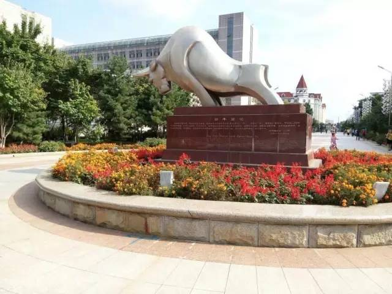
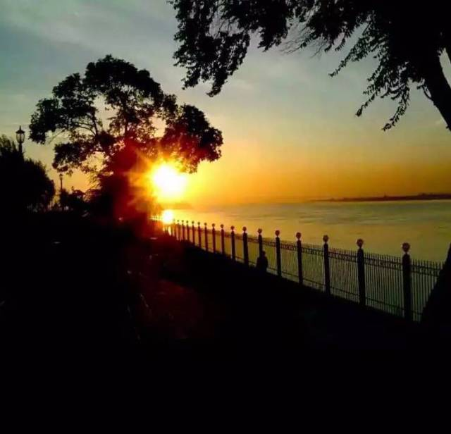
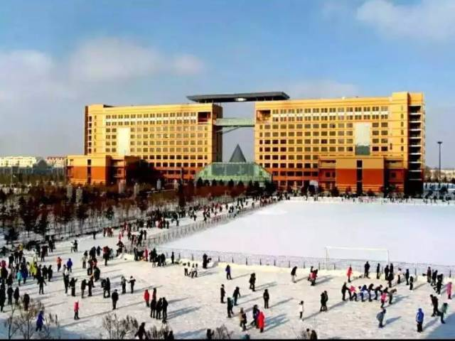
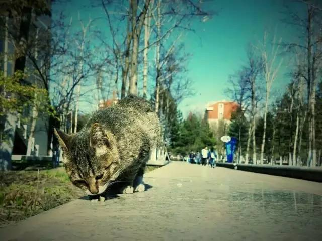
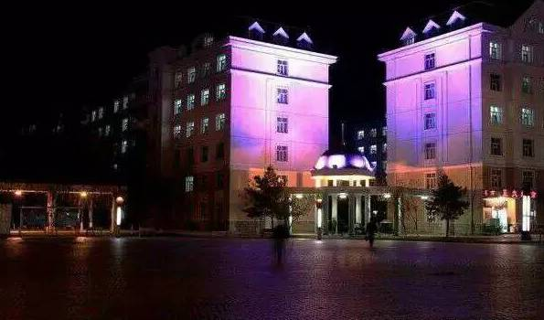
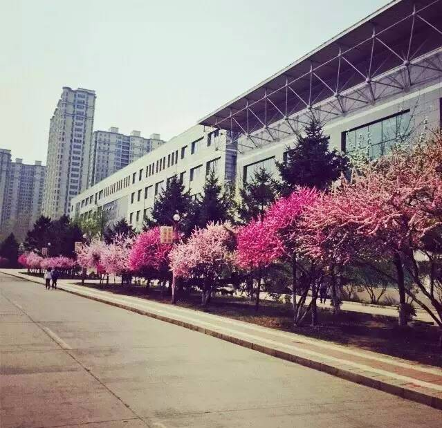
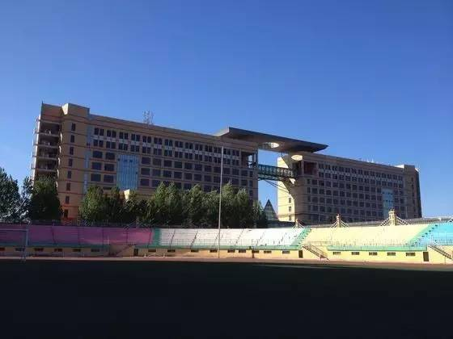
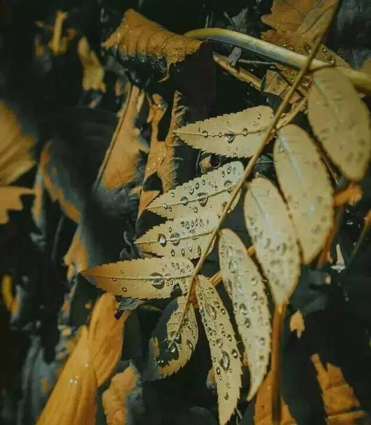
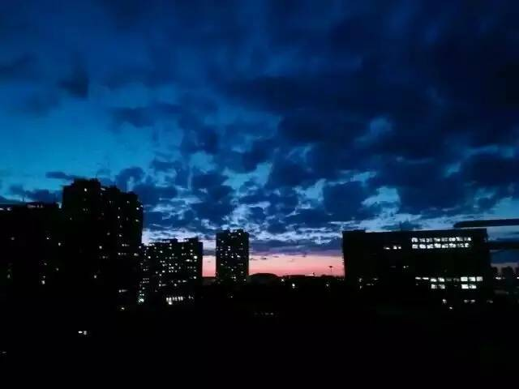

黑科大版《成都》|在松花江畔，聆听70年后的温柔
美文
岁月不居，时节如流；弦歌不辍，薪火相传。黑龙江科技大学在龙江大地上，以70年的上下求索、砥砺精进，见证了白山黑 水的斗转星移、沧桑巨变。2017年，黑龙江科技大学迎来70华诞。黑龙江科技大学大学生社团联合会创作科大版《成都》献礼 黑龙江科技大学建校70周年，愿母校续写华章，再创辉煌 。
每个城市都像是一个巨大的容器
装载着每个人的记忆
对于漂泊在外的人来说
每个人心里都有一个名为“成都”的地方
和一段回不去的旧时光
那是珍藏在心里的回忆
有人说
一个人，一座城，一段情
如果把歌词中的玉林路，小酒馆，牵过手的街头
换成科大的劲牛塑记，图书馆，吃过的沁芳园、走过的松花江畔
你又会想起什么呢?
把《科大》唱给正青春的你

让我掉下眼泪的
不只没走牛头
让我依依不舍的 是松花江的柳 
 故事能够写多久
故事能够写多久
一杯酒能温否？
让我转身回头的 是科大的眼眸
分别总是在六月 回忆是思念的愁
回首沁芳园门口 飘香母校温柔
 在这银装素裹校园里 都有你我足迹
 科大，带不走的 只有你
 和我在文化广场上走一走，哦~
直到广场舞人群散去了 也不停留
 清晨路过赛特门口 科厦路上穿流不休
 走到田径场的门口 看仪仗队精神抖擞
相聚总是在九月 时间在笔尖溜走
 深秋泛黄的落叶 亲吻着我额头
在那座灯火辉煌的大桥下 我们曾在一起
 对着星空呼喊的 是青春的烙印
和我在松花江畔上走一走，哦~
直到点点渔火都熄灭了 也不停留
你会指着远方星宿 我会静看松江东流
一座城市一所大学一首歌，
歌里是毕业后的打拼者对科大的眷恋，
歌里是即将毕业的学子们的离愁，
歌里是生活在这里的科大人的感触，
歌里是这里形形色色的人的过往和奋斗。
等“所有的灯都熄灭了”，
那些让你想起的稀松平常的温暖，
必定会照亮你的来路和归途。
《科大》，献给黑科大
献给全体在校师生
以及即将或已经毕业的你
科大，带不走的，只有你。
2017-8-12 20013
评论(48)
龙大大 第48楼
2017-08-06 14:11 回复
龙大大 thankyou
2017-08-06 14:11
龙大大 第48楼
2017-08-06 14:11 回复
龙大大 thankyou
2017-08-06 14:11
龙大大 thankyou
2017-08-06 14:11
龙大大 thankyou
2017-08-06 14:11
龙大大 第48楼
2017-08-06 14:11 回复
龙大大 第48楼
2017-08-06 14:11 回复
龙大大 第48楼
2017-08-06 14:11 回复